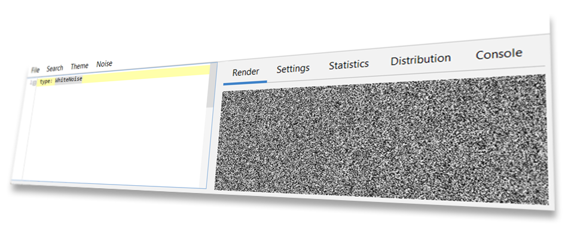
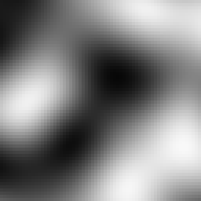
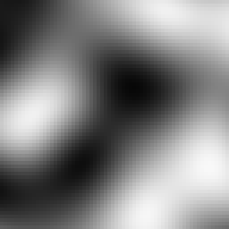
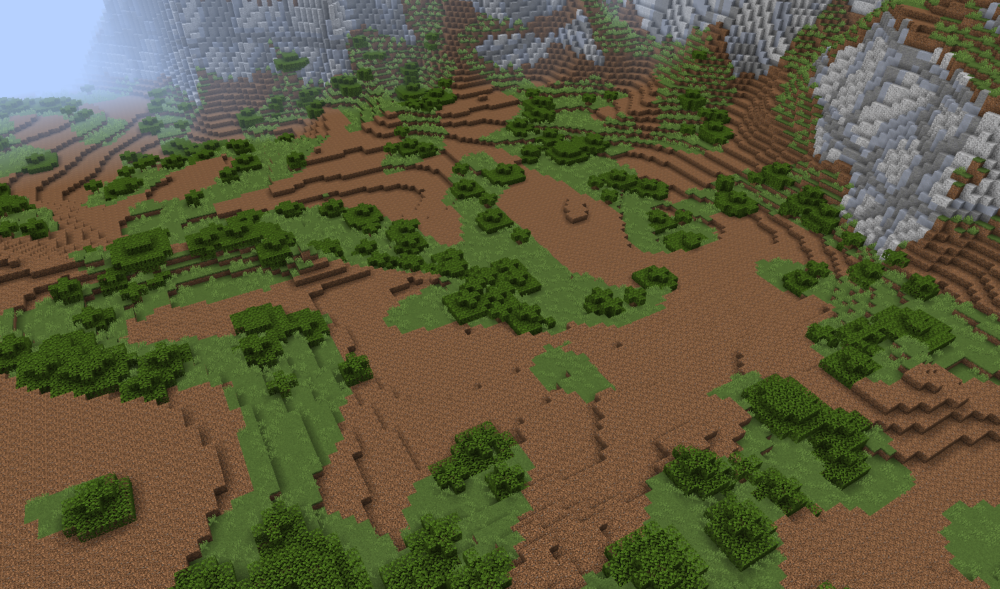
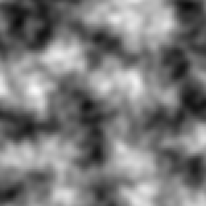
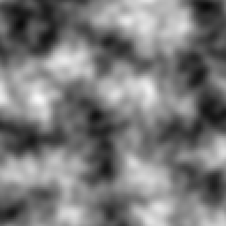
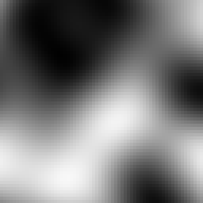
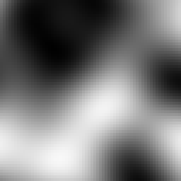
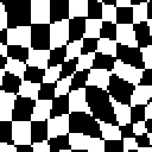

Noise Crash Course¶

What is Noise?¶
In Terra, noise does not refer to sound you can hear, but rather a series of randomly* generated values. These values are produced by something we will call a noise function - which is just a fancy algorithm that converts an input into a randomized numeric output.
┌──────────────────┐ ┌────────────────┐ ┌───────────────────┐
│ Input parameters │ → > Noise Function > → │ Randomized output │
└──────────────────┘ └────────────────┘ │ (aka 'noise') │
└───────────────────┘
Why is Noise Important?¶
Noise is a central concept in Terra, because just about every random aspect of world generation is influenced by noise to some degree. Having a basic understanding of noise and how to manipulate it will give you insight into how worlds are randomly generated by Terra, and is an important skill to have if you want to develop your own config packs.
Before learning how to manipulate noise, you should first have an understanding of the underlying concepts outlined here. Don’t worry, we won’t throw anything too complicated at you for now! Having a firm grasp on noise will bring you closer to controlling exactly how world generation will behave, which is why having a foundational understanding is important.
Here is just a short of list of things heavily influenced by noise in Terra:
The placement of biomes in the world.
How terrain is shaped.
How flora and trees are distributed.
Noise Basics¶
Here we will cover some key points is grasping noise in Terra. If you feel like certain concepts are too difficult to understand, feel free to skim over them for now, and revisit them later.
Demonstration¶
Let’s begin with a demonstration displaying the most basic process of ‘creating’ noise. We will use a theoretical implementation of a noise function called *white noise*, and generate some values with it. Explaining how exactly our white noise function creates these values is outside the scope of this guide, however is not essential in understanding the general idea.
We will perform a couple samples with our function, using numbers 1 - 10 as an input, and record the outputs as both a number and a shade from black to white. Conventionally, the values outputted by a noise function will be within a range of -1 to 1. We can visualize the relationship between the value and shade on a number line as such:

We will also round the output to one decimal place for simplicity. Typical outputs will produce decimals with much higher precision than just one decimal place!
MODEL
┌────────────────────┐ ┌─────────────┐ ┌──────────────────────┐
│ Input parameters │ → > White Noise > → │ Randomized output │
├────────────────────┤ │ Function │ │ within range [-1, 1] │
│ Number from 1 - 10 │ └─────────────┘ └──────────────────────┘
└────────────────────┘
RESULTS

Simple, right? All our noise function does is convert one value to another. You can think of noise functions like a little number machine that takes an input and scrambles it around to produce an output.
Note
Input numbers do not have to be whole numbers! This means you can input numbers like 1.5 and noise functions will
work still the same way. We’ve just used integers here for the sake of demonstration.
Determinism¶
One requirement of Terra noise functions is that the output must be *deterministic*, meaning given any input, the output must always be the same. This means we can reliably re-produce any ‘random’ results we get from noise functions by feeding it the same input.
Going off the results above, when passing the number 5 to our white noise function, we will always get the number
0.4 back.
Seeds¶
Sometimes, we want to use the same input, and same noise function, but for multiple random unique outputs. In that case,
we can use a seed in our noise function. Seeds are basically a way of getting a whole new uncorrelated set of random
values from the same inputs + noise function. Unlike the input value, seeds must be a whole number, meaning 5324 would
be a valid seed, but 231.23 would not.
Expanding on our basic model of noise generation we have:
┌──────────────────┐ ┌────────────────┐ ┌───────────────────┐
│ Input parameters │ → > Noise Function > → │ Randomized output │
├──────────────────┤ └────────────────┘ └───────────────────┘
│ - Seed │
│ - Input value │
└──────────────────┘
Here is an example using two different seeds to produce different outputs, using the same inputs and noise function from the example above.
Seed = 0
Seed = 1
One usage of seeds that you might be familiar with is minecraft world seeds. A vanilla minecraft world seed gets inserted into the many noise functions that govern vanilla world generation, resulting in completely different worlds per seed (since each noise function will return a completely new set of values for each unique seed). Combined with determinism, we’re able to produce new unique randomized worlds by picking a random seed, while also being able to generate the exact same world* provided we use the same seed.
Note
Vanilla Bedrock Generation Trivia
Some noise functions in vanilla Minecraft generation use the same seed for every world (meaning they don’t factor in the world seed), which can result in every world generating a certain characteristic the exact same way. One notable example - the function that controls bedrock formation uses a static seed for every world, leading every vanilla generated world to share the same random configuration of bedrock.
Within Terra world generation, all noise producing functions use a combination of the world seed and a value called salt, to determine its own seed. Salt is a number you specify when defining noise configurations, and simply gets added to the world seed. This allows individual noise configurations to use new sets of output values, while sharing the same base noise function.
Flavors of Noise¶
There are many variants and implementations of noise functions, such as our white noise function above. Each has their own quirks, behaviors, and applications, however in general they all follow the same basic principles outlined here. We will cover a couple of these variants later down the line.
Here is a small list of notable noise functions that are commonly used in Terra:
Simplex Noise
Cellular / Voronoi / Worley Noise
White Noise
Value Noise
Multidimensional Noise¶
The phrase ‘multidimensional noise’ may sound intimidating, but don’t worry, it’s a fairly simple concept to understand. Simply put, multidimensional noise involves providing multiple input values, rather than just one. In every example thus far, we have only provided one value for each noise ‘sample’ (excluding the seed), meaning we are conceptually only sampling in one dimension, however we can go further.
The simplest example of multidimensional noise is just adding one extra input to our noise function, for a grand total
of 2 inputs. Conveniently, that gives us 2 dimensions, thus we can easily display a set of 2D samples in a grid. We will
refer to the first input as X, and the second as Z.
In a new example, let’s use a range of 1 - 3 for both X and Z, giving us a total of 9 samples (3 x 3). We will only
label the X & Z axes for the sake of simplicity.
TWO DIMENSIONAL MODEL
┌──────────────────┐ ┌─────────────┐ ┌───────────────────┐
│ Input parameters │ → > White Noise > → │ Randomized output │
├──────────────────┤ │ Function │ ├───────────────────┤
│ - Seed │ └─────────────┘ │ Displayed as as a │
| - Input 1 (X) | │ 2D grid of shades │
| - Input 2 (Z) | └───────────────────┘
└──────────────────┘
RESULTS

As you can see, all we have done is added another dimension to our white noise function, allowing for noise to be depicted as a 2D grid, rather than a list of values.
Taking this experiment further, let’s use a larger sample size of 64 x 64:

What we have done here is essentially produced a random image using our white noise function. By default, we will assume the above format of visualizing noise in 2D as an image, where each output value represents a grayscale pixel.
HIGHER DIMENSIONS
Many noise algorithms support an arbitrary amount of inputs, meaning that we can sample noise in any number of
dimensions. Typically, we will only use up to three dimensions in Terra, where each input corresponds to the position on
each axis X, Y, and Z.
Segmentation¶
Segmentation in this context refers to splitting a set of values into several parts based on the range each value fits in to.
Note
This is not a concept specific to noise, but is something to keep in mind, as it is commonly used in conjunction with noise and world generation.
The simplest form of segmentation is thresholding, which simply involves separating a set of values into two groups
based on whether they’re higher or lower than a number. An example of thresholding would be outputting a value of -1
for input values less than 0, and outputting a value of 1 for every other input, however the output could be
anything, such as true / false depending on use.
Applying a threshold to every pixel of an image where input = intensity of the pixel, output = either a black or
white pixel, and threshold = 50%, we get the following result:

Note
We can represent thresholding mathematically as a piecewise function:
f(x) =
{
-1 if x < threshold
1 if x >= threshold
}
Most applications of segmentation in Terra are essentially fancy piecewise functions like the one above, written programmatically.
Segmentation is a useful concept to understand when combined with noise, as it allows us to split noise functions into distinct values. We will cover an example of segmented noise and an application of it in the following section.
Applying Noise to World Generation¶
You might be wondering: How does this information translate to generating an entire world? Before we jump straight from simple noise generation to generating entire worlds, let’s just keep it simple and apply the knowledge we’ve covered thus far to a simple application.
Planting Grass¶
Let’s say we have a patch of land, and we want to generate some tall grass on it, how would we determine where the grass goes? The first thing we will want to do is define some basic rules for generating grass, before we get to the part where noise is involved:
Grassmay only generate on top ofGrass Blocks.Grassmay only replaceAir.
Simple enough, now we know that grass will only generate where appropriate. With only these rules however, we would end up with grass on top of every single grass block! What if we only wanted it on some grass blocks? Well we can use our white noise function for that!
Let’s feed our X & Z world coordinates & seed into our 2D white noise function, which will give us a randomized
output value (from -1 to 1 as discussed) for every X-Z column for any given world seed. We will then use that output
value to determine whether we place some grass or not. The way this will be determined is by simply
thresholding it! We’ll start with a threshold of 0, where any value below our threshold will mean
place grass.
GRASS PLACEMENT MODEL
┌──────────────────┐ ┌─────────────┐ ┌───────────────────┐ ┌─────────────────────────┐
│ Input parameters │ → > White Noise > → │ Randomized output │ → > Threshold Function │
├──────────────────┤ │ Function │ ├───────────────────┤ ├─────────────────────────┤
│ - World Seed │ └─────────────┘ │ A value from │ │ If below the threshold, │
| - X Coordinate │ │ -1 to 1 │ │ place grass. (Displayed │
| - Z Coordinate │ └───────────────────┘ │ as a green pixel) │
└──────────────────┘ └─────────────────────────┘
RESULTS

As you can see, we now have a method of randomly determining if grass should be placed or not for any given X-Z coordinate in any world. We can even reduce / increase how much grass we get by modifying our threshold value:
Threshold = -0.25

Lowering the threshold from 0 to -0.25 results in less grass because we are effectively removing the values between
-0.25 and 0 from falling below the threshold. Conversely, increasing the threshold will result in more grass, as
more values will fall below the threshold.
Combining this with our rules we established earlier, we now have a method of checking for any block whether it should be grass or not.

Coherent Noise¶
Thus far, we have only covered noise that outputs seemingly random tv-static-like values, which is fine for simple applications like the grass example above. But how can we get noise capable of producing smooth rolling hills, vast mountains, and other structured random generation? Let’s place the white noise function under the category ‘random noise’, and introduce a new category of noise functions called ‘coherent noise’.
WHAT’S THE DIFFERENCE?
The main difference that separates random noise from coherent noise is that while random noise functions produce noise with no apparent structure, coherent noise functions produce ‘structured’ noise, where adjacent input values produce correlated output values.
To get a better idea of the difference, here is a visualization of two different 2D sampled noise functions that both share the same inputs:
Random | Coherent

As you can see, the coherent noise example has a discernible structure where output values are smooth, compared to the random noise example where there’s no apparent structure. The coherent noise function used above is known as Simplex noise, and is one of the many flavors of noise provided in Terra.
Segmenting Noise¶
Now that we have introduced coherent noise, we can provide a better visual example of noise segmentation. Let’s use the following list of colors and distribute them across a noise function via segmentation:
colors:
- Red
- Yellow
- Green
- Blue
Note
Since we know that noise outputs will generally be between -1 and 1, we will need to assign each
color its own a range within the output range [-1, 1]. To do this, it’s helpful to visualize things on a number
line like so:

From this we can intuitively see that blue corresponds to the range [-1, 0.5], green to [-0.5, 0] and so on.
Thankfully, you won’t ever have to define every range required for segmentation by hand, as Terra will automatically
segment noise for you, but it’s still useful to get an idea of what is happening behind the scenes. Let’s finally
segment some simplex noise by categorizing the output values into our colors based on the range they fit in.

This is where the usefulness of segmentation comes in - we can treat these colors as anything, whether that is a set
of biomes, a pattern of blocks, or anything else that requires a list and a noise function. For example, red could
represent a tropical island biome, yellow a beach, green shallow ocean, and blue deep ocean. Generally lists like
this will be defined as a weighted pool such that you can easily weigh certain items to take up more
space as needed. As an example, here is what our new biome list may look like:
biomes:
- TROPICAL_ISLAND: 1
- BEACH: 1
- SHALLOW_OCEAN: 1
- DEEP_OCEAN: 1
Manipulating Noise¶
Now that we have covered some essential topics regarding noise, let’s talk about creating, configuring, stretching, squishing, tweaking, and remixing it!

Noise Configs¶
So how exactly does this information translate to actually configuring noise in Terra? This is where we will introduce
noise configs. When configuring config packs many options will require a noise config, which is
written in YAML just like most other areas of pack development. The simplest noise config just requires a type, which
defines the noise function for use in the context of a noise config definition.
Here what that would look like:
type: <Noise Type>
We can bring back our white noise function from earlier, which has type WHITE_NOISE, and insert it into the template
above, giving us the following noise config:
type: WHITE_NOISE
Noise Config Parameters¶
In addition to specifying the noise function to use, the type key will also determine what other keys become available
as either required or optional when defining a noise config. Some types will have additional keys that need to be
specified to function properly, and others like WHITE_NOISE don’t require anything extra.
One example of an optional key available when specifying the WHITE_NOISE type is salt. The function of salt is
covered in Seeds if you need a refresher. Here is what the above example looks like with the salt key added:
type: WHITE_NOISE
salt: 2321
Another thing to note is that most optional parameters have a pre-defined default value that’s set when not specified.
When the salt key is not included in a noise config, it will default to its predefined value 0.
Noise Tool¶
Now that we know how to write a simple noise config, we can use a handy program aptly named the Noise Tool to preview what our config looks like.
The Noise Tool was specially designed for creating, previewing, and modifying noise configs, and is also what was used to generate every image of noise used on this page. You can find the Noise Tool on GitHub - Source / Download
Note
We suggest that you follow along the rest of this section with the Noise Tool, so you can try out parameters get the hang of writing your own noise configs. Playing around and experimenting on your own is a great way of learning what each parameter does, and will give you an intuition on how you can fine tune them to your advantage.
For a complete list of noise function types and their parameters available in Terra, please refer to the
Noise Configuration documentation.
Frequency¶
You might be wondering how we control just how large or how small details produced by noise functions are - This is where the concept of frequency comes in. Frequency is a number that modifies the scale of noise, where higher frequency produces more ‘zoomed out’ noise, while lower frequency results in more ‘zoomed in’ noise.
Let’s preview some comparisons of the same noise function with varying frequencies:
2x Frequency | 1x Frequency | 0.5x frequency
 

As a general rule of thumb:
HIGHER FREQUENCY
Zooms out.
Produces smaller & closer details.
Increases the density of ‘points’ per unit of space.
LOWER FREQUENCY
Zooms in.
Produces larger & more spread out details.
Decreases the density of ‘points’ per unit of space.
IN A NOISE CONFIG
Frequency can be defined for applicable typess via the frequency key like so:
type: <Noise Type>
frequency: <Desired Frequency>
Something to note is that tweaking frequency is only really useful for functions in the coherent noise category. You’re able to modify the frequency of random noise based functions, however they don’t have the property of being able to scale like coherent noise functions do. There isn’t much reason to scale the frequency of a random noise function, as doing so functionally has same effect as changing the seed.
Note
Under The Hood - How frequency works
The math behind frequencies is very simple: multiply the input coordinates of a noise function by the frequency. Here is a model of the process:
┌──────────────────┐ ┌────────────────┐ ┌───────────────────┐
│ Input parameters │ ╭──────┬ → > Noise Function > → │ Randomized output │
├──────────────────┤ │ │ └────────────────┘ └───────────────────┘
│ - Seed > ─────────╯ │
│ - Frequency > ─────────╮ │
| - Input 1 (X) > → X * Frequency ┤
| - Input 2 (Z) > → Y * Frequency ╯
└──────────────────┘
For example, if we have a frequency of 2, and want to sample the coordinates (X = 3, Z = 2), first the coordinates will be multiplied by the frequency 2, giving us the scaled coordinates (X’ = 6, Z’ = 4). This new set of coordinates will then be input into the noise function which will then give us the final output value.
Based on this logic, we can deduct that the input:
(X = 3, Z = 2, Frequency = 2)
Will give the exact same output when inputting:
(X = 6, Z = 4, Frequency = 1)
Higher frequencies effectively produce faster changes when incrementing input coordinates, which is why higher frequencies make details closer and therefore smaller.
In Context¶
To get a better idea of how noise configs get used in packs, Here is what one looks like in the context of a palette configuration. The noise config is highlighted.
id: DIRTY_GRASS
layers:
- # Single layer of grass and dirt blocks
layers: 1
materials:
- "minecraft:grass_block": 1
- "minecraft:coarse_dirt": 1
noise:
type: OPEN_SIMPLEX_2
frequency: 0.05
- # Two layers of dirt below the top layer
layers: 2
materials: "minecraft:dirt"
- # Then finally stone
layers: 1
materials: "minecraft:stone"
The usage of noise here controls the arrangement of the weighted pool of materials highlighted in red. To get a better idea of the relationship, here is a screenshot of a biome which uses the above palette configuration:
This is also another great example of noise segmentation in action with weighted pools. You can
see our OPEN_SIMPLEX_2 function has been segmented equally between grass blocks and dirt, giving us a nice random
pattern of surface blocks in the biome.
Fractal Noise¶
In some situations, coherent noise on its own may be far too smooth and uniform to produce ‘realistic‘ results. Looking at the images above, you may notice plain simplex is quite blobby, which may not be desired for applications where more detail is required. This is where fractal noise comes in.
The basic premise of fractal noise that we can produce more detail by stacking multiple of the same noise function on top of each other, where each successive function (called an octave) has a higher frequency and a scaled down output value (making it contribute less to the overall noise). This process of progressively stacking incrementally smaller noise layers to produce a fractal effect is referred to as fractal Brownian motion (Commonly abbreviated as fBm).
It might sound quite complicated in writing, so we can demonstrate this concept visually to get a better idea of what’s happening:
1 Octave (Regular Noise) | 2 Octaves | 3 Octaves | 4 Octaves

 

As you can see, the more octaves we add, the more detailed the noise gets. This is the main application of fractal noise - to produce more detail, especially at lower frequencies where detail is sparse. You won’t have to worry about the exact math behind how each octave gets stacked, as Terra will handle all of that for you.
IN A NOISE CONFIG
When fractalizing noise configs, we define the fractalizer as its own noise config, which takes another noise config as an input. The syntax for this is as followed:
type: <Fractalizer Type>
function:
type: ... # Noise config to be fractalized
As you can see, we have the main noise config for our fractalizer, and a second noise config nested inside under the
function key. The function key is the only required parameter for all fractalizers.
Based on this template, we can create a real noise config. Let’s use the FBM fractalizer, with an input function with
type OPEN_SIMPLEX_2:
type: FBM
function:
type: OPEN_SIMPLEX_2
Pretty simple, all we’ve done is passed some simplex noise into the FBM function. Fractalizers have a couple
additional parameters, including octaves, lacunarity, and gain. Here is another example config with those
parameters already defined:
type: FBM
function:
type: OPEN_SIMPLEX_2
octaves: 3
lacunarity: 2
gain: 0.75
Feel free to preview this config in the Noise Tool, and have an experiment with each parameter to see what they all do. To see all available fractalizers and their parameters, please refer to the Noise Configuration documentation.
Domain Warping¶

Similar to fractal noise, domain warping involves manipulating the input, aka the domain , before it’s passed to the noise function. More specifically, the domain of a noise function will be warped via translation by the output of a secondary warping function.
To demonstrate domain warping more clearly, let’s take a 64 x 64 square of samples in a space. Our function to be warped will be a checkerboard pattern, and our warping function will be some basic simplex noise.
 

When domain warping the checker board function by the simplex we get the following result:
As you can see, our once perfectly square boxes have been contorted out of shape by the warp function.
IN A NOISE CONFIG
To use domain warping, we will need to set the type to DOMAIN_WARP, and specify two additional required keys
function and warp. As you may have already guessed, both function and warp need to be set to a noise config,
similar to how fractalizers accept an input function:
type: DOMAIN_WARP
function:
type: ... # Noise config to be warped
warp:
type: ... # Warp noise config
Additionally, we can specify amplitude which determines how much the function defined in function will be warped by
the warp function. Here is an example of a real noise config which warps low frequency simplex with another simplex
function:
type: DOMAIN_WARP
function:
type: OPEN_SIMPLEX_2
frequency: 0.005
warp:
type: OPEN_SIMPLEX_2
amplitude: 20
Again it’s recommended that you try out this noise config in the Noise Tool and see what changing each
parameter does - What happens if you use WHITE_NOISE as a warp function instead?
Under The Hood - The Math Behind Domain Warping
To get an in depth understanding of what's happening, let's explain the formula that is used to achieve domain warping: > > * We will define `noise(coordinate)` as our function to be warped, where `coordinate` represents the input values > (such as the familiar `X` and `Z` coordinates). > > * To *translate* `noise`, we can simply add some translation to the input: `noise(coordinate + translation)`. > Translating simply means moving left / right / up / down / etc. > > * We can then define `warp_noise(coordinate)` as our warping function. > > * If we make `translation` our `warp_noise` function then now the `coordinate` of `noise` will be translated by > `warp_noise` like so: > > `noise(coordinate + warp_noise(coordinate))` > > * Finally, we can multiply the output of `warp_noise` by a value `amplitude`, which will control how 'strong' the > warping will be, to give us the final formula: > > `noise(coordinate + warp_noise(coordinate) * amplitude)`
Chained Functions¶
Because some keys such as function and warp accept a noise config, something we can do is feed a
`domain warp <#domain-warping>`_ function into another domain warp function. In fact, we could feed any noise
function into any other one, given it has a parameter that accepts a noise config. This is incredibly powerful, as it
allows for constructing complex highly configurable systems of noise. Here is an example where we domain warp some
fractalized simplex by more fractalized simplex (which has also been domain warped by more…
fractalized simplex!):
type: DOMAIN_WARP
amplitude: 300
function:
type: FBM
function:
type: OPEN_SIMPLEX_2
frequency: 0.002
warp:
type: DOMAIN_WARP
amplitude: 20
function:
type: FBM
function:
type: OPEN_SIMPLEX_2
frequency: 0.003
warp:
type: FBM
function:
type: OPEN_SIMPLEX_2
frequency: 0.02
Conclusion¶
Now that you’ve got an idea of what noise is, how it works, and a couple ways of manipulating it, you should now be equipped with the necessary knowledge to start configuring your own fancy noise functions for use in your own customized world generation! For more information on the available noise functions in Terra, please refer to the Noise Configuration documentation. If you have any further questions, feel free to ask us in our Discord!